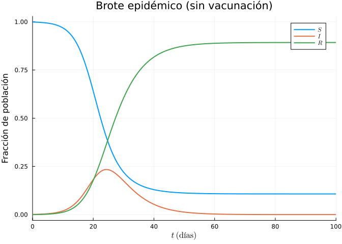
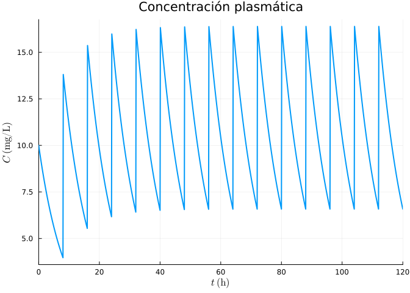
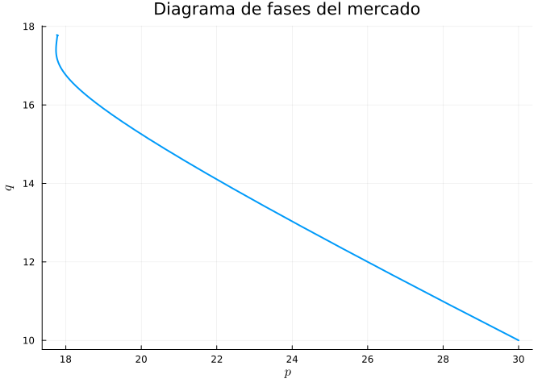

11 Aplicaciones en Ciencias e Ingeniería
Este capítulo final reúne problemas integradores que combinan las técnicas de los capítulos anteriores: modelización con EDO y EDP, sistemas no lineales, resolución numérica, análisis de estabilidad y simulación estocástica. Cada ejercicio parte de un problema real de las ciencias de la salud, la ingeniería o las finanzas, y recorre el ciclo completo de modelizar → resolver → interpretar.
11.1 Ejercicios resueltos
Para la realización de esta práctica se requieren los siguientes paquetes:
using Plots # Dibujo de gráficas.
using LaTeXStrings # Código LaTeX en los gráficos.
using SymPyPythonCall # Cálculo simbólico.
using LinearAlgebra # Álgebra matricial.
using DifferentialEquations # Resolución numérica de EDO y sistemas.
using DiffEqCallbacks # Callbacks para discontinuidades en EDO.
using SpecialFunctions # Función de error (erf).
using Statistics # Medias y desviaciones.
NotaVersiones de Julia y de los paquetes utilizados
Status `~/.julia/environments/v1.12/Project.toml` [459566f4] DiffEqCallbacks v4.18.3 [0c46a032] DifferentialEquations v8.0.2 [b964fa9f] LaTeXStrings v1.4.0 [91a5bcdd] Plots v1.41.6 [276daf66] SpecialFunctions v2.8.0 [bc8888f7] SymPyPythonCall v0.5.1 [37e2e46d] LinearAlgebra v1.12.0
Ejercicio 11.1 Epidemiología: modelo SIR con vacunación. La propagación de una enfermedad infecciosa en una población cerrada de tamaño \(N\) se describe con el modelo SIR, donde \(S\), \(I\) y \(R\) son las fracciones de población susceptible, infectada y recuperada:
\[ S' = -\beta S I, \qquad I' = \beta S I - \gamma I, \qquad R' = \gamma I. \]
Para una gripe se estima una tasa de contagio \(\beta = 0.5\) día⁻¹ y una tasa de recuperación \(\gamma = 0.2\) día⁻¹.
Calcular el número reproductivo básico \(R_0\) y el umbral de inmunidad de rebaño.
NotaAyudaEl número reproductivo básico es \(R_0 = \beta/\gamma\). La epidemia crece mientras \(S > 1/R_0\); por tanto, vacunando a una fracción \(p_c = 1 - 1/R_0\) se impide el brote.
TipSoluciónβ, γ = 0.5, 0.2 R0 = β / γ pc = 1 - 1/R0 (R0 = R0, umbral_rebaño = pc)(R0 = 2.5, umbral_rebaño = 0.6)El número reproductivo es \(R_0 = 2.5\): cada infectado contagia en promedio a 2.5 personas. Para frenar la epidemia hay que inmunizar a más del \(60\%\) de la población.
Simular el brote partiendo de un único infectado (\(I_0 = 10^{-3}\)) sin vacunación.
TipSoluciónusing Plots, LaTeXStrings, DifferentialEquations function sir!(du, u, p, t) S, I, R = u β, γ = p du[1] = -β * S * I du[2] = β * S * I - γ * I du[3] = γ * I end u0 = [0.999, 0.001, 0.0] prob = ODEProblem(sir!, u0, (0.0, 100.0), (β, γ)) sol = solve(prob, Tsit5(), saveat = 0.5) plot(sol, label = [L"S" L"I" L"R"], lw = 2, xlabel = L"t\ \mathrm{(días)}", ylabel = "Fracción de población", title = "Brote epidémico (sin vacunación)")
La curva de infectados \(I(t)\) alcanza un pico (la “ola”) y luego decae. El pico se produce cuando \(S = 1/R_0\).
Repetir vacunando previamente a una fracción \(p = 0.7 > p_c\) de la población y comprobar que no hay brote.
TipSoluciónp_vac = 0.7 u0v = [1 - p_vac - 0.001, 0.001, p_vac] # vacunados pasan a R solv = solve(ODEProblem(sir!, u0v, (0.0, 100.0), (β, γ)), Tsit5(), saveat = 0.5) Imax_sin = maximum(sol[2, :]) Imax_con = maximum(solv[2, :]) (pico_sin_vacuna = Imax_sin, pico_con_vacuna = Imax_con)(pico_sin_vacuna = 0.23386388754390816, pico_con_vacuna = 0.001)Con una cobertura vacunal superior al umbral de rebaño, la fracción inicial de susceptibles \(S_0 = 0.299 < 1/R_0 = 0.4\), de modo que \(I'(0) < 0\): el número de infectados decrece desde el inicio y la epidemia no llega a despegar.
Ejercicio 11.2 Farmacocinética: pauta de dosis múltiples. La concentración plasmática \(C(t)\) (mg/L) de un fármaco con eliminación de primer orden sigue \(C' = -k\,C\), con constante \(k = \ln 2 / t_{1/2}\). El fármaco tiene una semivida \(t_{1/2} = 6\) h y se administra en bolos que elevan la concentración en \(C_D = 10\) mg/L cada \(\tau = 8\) h.
Simular 5 días de tratamiento y observar la acumulación hasta el estado estacionario.
NotaAyudaCada dosis es una discontinuidad en \(C\). En
DifferentialEquationsse modela con un callback de tiempo prefijado (PresetTimeCallback) que suma \(C_D\) en cada instante de administración.TipSoluciónusing Plots, LaTeXStrings, DifferentialEquations, DiffEqCallbacks t_medio = 6.0 k = log(2) / t_medio C_D, τ = 10.0, 8.0 tiempos_dosis = τ:τ:120.0 afecta!(integrator) = integrator.u[1] += C_D cb = PresetTimeCallback(collect(tiempos_dosis), afecta!) pk!(du, u, p, t) = (du[1] = -k * u[1]) probpk = ODEProblem(pk!, [C_D], (0.0, 120.0)) solpk = solve(probpk, Tsit5(), callback = cb, saveat = 0.1) plot(solpk, label = "", lw = 2, xlabel = L"t\ \mathrm{(h)}", ylabel = L"C\ \mathrm{(mg/L)}", title = "Concentración plasmática")
Los picos y valles crecen dosis a dosis y se estabilizan: el fármaco se acumula hasta que lo eliminado en un intervalo iguala a lo administrado.
Calcular analíticamente las concentraciones máxima y mínima en estado estacionario y el factor de acumulación.
TipSoluciónr = exp(-k * τ) # fracción que queda tras un intervalo Cmax_ss = C_D / (1 - r) # justo tras el bolo Cmin_ss = Cmax_ss * r # justo antes del siguiente acumulacion = 1 / (1 - r) (Cmax = Cmax_ss, Cmin = Cmin_ss, factor_acumulacion = acumulacion)(Cmax = 16.579630871775027, Cmin = 6.579630871775029, factor_acumulacion = 1.6579630871775028)En estado estacionario la concentración oscila entre \(C_{\min}\) y \(C_{\max}\). El factor de acumulación \(1/(1-e^{-k\tau})\) mide cuánto se acumula respecto a una dosis única. La suma geométrica de las contribuciones residuales de todas las dosis previas da el pico estacionario.
Ejercicio 11.3 Ingeniería térmica: aleta de refrigeración. Una aleta de disipador de longitud \(L = 5\) cm, conductividad \(k = 200\) W/(m·K) (aluminio), sección \(A\) y perímetro \(P\) disipa calor por convección al aire (\(h = 25\) W/(m²·K)). El exceso de temperatura \(\theta(x) = T(x) - T_\infty\) satisface la EDO de contorno
\[ \theta'' - m^2\,\theta = 0, \qquad m^2 = \frac{hP}{kA}, \]
con base a \(\theta(0) = \theta_b = 60\) K y extremo aislado \(\theta'(L) = 0\).
Obtener la solución analítica y verificarla simbólicamente.
NotaAyudaLa solución general es \(\theta(x) = c_1\cosh(mx) + c_2\sinh(mx)\). Imponiendo \(\theta(0)=\theta_b\) y \(\theta'(L)=0\) se obtiene \(\theta(x) = \theta_b\dfrac{\cosh\!\big(m(L-x)\big)}{\cosh(mL)}\).
TipSoluciónusing SymPyPythonCall @syms x m L θb θ = θb * cosh(m*(L - x)) / cosh(m*L) residuo = simplify(diff(θ, x, 2) - m^2 * θ) (residuo = residuo, base = θ.subs(x, 0), flujo_extremo = diff(θ, x).subs(x, L))(residuo = 0, base = θb, flujo_extremo = 0)El residuo es 0 y se cumplen las dos condiciones de contorno: en \(x=0\) vale \(\theta_b\) y su derivada se anula en \(x=L\).
Para una aleta rectangular delgada de espesor \(t = 2\) mm y anchura \(w = 3\) cm, calcular el perfil de temperatura, la eficiencia de la aleta y el calor disipado.
TipSoluciónusing Plots, LaTeXStrings kal, h = 200.0, 25.0 Lf, tf, wf = 0.05, 0.002, 0.03 Ac = wf * tf # área de sección Pf = 2 * (wf + tf) # perímetro mval = sqrt(h * Pf / (kal * Ac)) θb_val = 60.0 θfun(x) = θb_val * cosh(mval*(Lf - x)) / cosh(mval*Lf) xs = range(0, Lf, length = 100) plot(xs .* 100, θfun.(xs), lw = 2, label = "", xlabel = L"x\ \mathrm{(cm)}", ylabel = L"\theta\ \mathrm{(K)}", title = "Perfil de temperatura en la aleta") η = tanh(mval*Lf) / (mval*Lf) # eficiencia de la aleta Q = sqrt(h*Pf*kal*Ac) * θb_val * tanh(mval*Lf) # calor disipado (W) (m = mval, eficiencia = η, calor_disipado_W = Q)(m = 11.547005383792516, eficiencia = 0.9019427399712698, calor_disipado_W = 4.329325151862096)La temperatura cae desde la base hacia el extremo. La eficiencia \(\eta = \tanh(mL)/(mL)\) compara el calor real con el ideal (aleta toda a \(\theta_b\)); un valor cercano a 1 indica una aleta bien diseñada.
Ejercicio 11.4 Finanzas: valoración de una opción por Monte Carlo. El precio de una acción sigue un movimiento browniano geométrico, de modo que a vencimiento \(T\) vale \(S_T = S_0\exp\!\big((r - \tfrac{1}{2}\sigma^2)T + \sigma\sqrt{T}\,Z\big)\), con \(Z\sim\mathcal N(0,1)\). Una opción de compra (call) europea con precio de ejercicio \(K\) paga \(\max(S_T - K, 0)\) a vencimiento. Datos: \(S_0 = 100\)€, \(K = 105\)€, \(r = 0.03\), \(\sigma = 0.25\), \(T = 1\) año.
Estimar el precio de la opción simulando \(10^6\) trayectorias y descontando el pago esperado.
NotaAyudaEl precio es \(V = e^{-rT}\,\mathbb E[\max(S_T-K,0)]\). La esperanza se aproxima por la media muestral de los pagos simulados (método de Monte Carlo).
TipSoluciónusing Statistics S0, K, r, σ, T = 100.0, 105.0, 0.03, 0.25, 1.0 Nsim = 1_000_000 Z = randn(Nsim) ST = S0 .* exp.((r - σ^2/2) * T .+ σ * sqrt(T) .* Z) pagos = max.(ST .- K, 0.0) precio_mc = exp(-r * T) * mean(pagos) error_est = exp(-r*T) * std(pagos) / sqrt(Nsim) # error estándar (precio_montecarlo = precio_mc, error_estandar = error_est)(precio_montecarlo = 9.13340404065506, error_estandar = 0.016359216447620846)El precio estimado ronda los 9.5€, con un intervalo de confianza estrecho gracias al elevado número de simulaciones.
Comparar con la fórmula cerrada de Black–Scholes.
TipSoluciónusing SpecialFunctions Φ(z) = 0.5 * (1 + erf(z / sqrt(2))) # función de distribución normal d1 = (log(S0/K) + (r + σ^2/2)*T) / (σ*sqrt(T)) d2 = d1 - σ*sqrt(T) precio_bs = S0 * Φ(d1) - K * exp(-r*T) * Φ(d2) (Black_Scholes = precio_bs, MonteCarlo = precio_mc)(Black_Scholes = 9.121799457724087, MonteCarlo = 9.13340404065506)Ambos valores coinciden dentro del error de muestreo: Monte Carlo confirma la fórmula analítica y, a diferencia de esta, se generaliza a opciones exóticas sin solución cerrada.
Ejercicio 11.5 Economía: dinámica de precios de un mercado. El precio \(p(t)\) de un bien se ajusta según el exceso de demanda: \(p' = \lambda\big(D(p) - S(p)\big)\), con demanda \(D(p) = a - b p\) y oferta \(S(p) = c + d p\) (\(a,b,c,d,\lambda > 0\)). Con expectativas adaptativas, el modelo se amplía a un sistema en el precio \(p\) y su tendencia esperada \(q\).
Hallar el precio de equilibrio del modelo simple y demostrar que es estable.
NotaAyudaEl equilibrio \(p^*\) cumple \(D(p^*) = S(p^*)\). Linealizando, \(p' = -\lambda(b+d)(p - p^*)\), cuya solución decae exponencialmente porque \(b + d > 0\).
TipSolucióna, b, c, d, λ = 100.0, 2.0, 20.0, 3.0, 0.5 p_eq = (a - c) / (b + d) tasa = -λ * (b + d) # autovalor de la linealización (precio_equilibrio = p_eq, autovalor = tasa)(precio_equilibrio = 16.0, autovalor = -2.5)El precio de equilibrio es \(p^* = (a-c)/(b+d) = 16\)€. El autovalor es negativo, por lo que cualquier desajuste inicial se corrige y el mercado converge monótonamente al equilibrio.
Con expectativas adaptativas \(q' = \mu(p - q)\) y demanda que depende de la tendencia esperada, estudiar si aparecen oscilaciones.
TipSoluciónusing LinearAlgebra, Plots, LaTeXStrings, DifferentialEquations μ = 0.8 function mercado!(du, u, pr, t) p, q = u du[1] = λ * ((a - b*p + 0.5*q) - (c + d*p)) # exceso de demanda du[2] = μ * (p - q) # ajuste de expectativas end J = [-λ*(b+d) 0.5λ; μ -μ] # matriz jacobiana del sistema vals = eigvals(J) sol = solve(ODEProblem(mercado!, [30.0, 10.0], (0.0, 60.0)), Tsit5()) plot(sol, idxs = (1, 2), lw = 2, label = "", xlabel = L"p", ylabel = L"q", title = "Diagrama de fases del mercado")
(autovalores = vals, parte_real = real.(vals), parte_imag = imag.(vals))(autovalores = [-2.6104686356149274, -0.6895313643850727], parte_real = [-2.6104686356149274, -0.6895313643850727], parte_imag = [0.0, 0.0])Si los autovalores son complejos con parte real negativa, el precio converge al equilibrio mediante oscilaciones amortiguadas: el mercado sobrerreacciona y corrige, dibujando una espiral en el espacio de fases \((p, q)\).
11.2 Ejercicios propuestos
Ejercicio 11.6 Salud pública. Ampliar el modelo SIR a un modelo SEIR (con población expuesta \(E\) en periodo de incubación) y estudiar cómo cambia la velocidad del brote.
Ejercicio 11.7 Ingeniería química. Modelizar un reactor de tanque agitado (CSTR) con una reacción exotérmica mediante un sistema de dos EDO (balance de materia y de energía) y localizar sus estados estacionarios y su estabilidad.
Ejercicio 11.8 Ingeniería estructural. Calcular la deflexión de una viga en voladizo sometida a carga distribuida resolviendo la EDO de contorno de cuarto orden \(EI\,y^{(4)} = w(x)\) y determinar la flecha máxima.
Ejercicio 11.9 Finanzas. Simular por Monte Carlo la evolución de una cartera con dos activos correlacionados y estimar su Valor en Riesgo (VaR) al 95 %.
Ejercicio 11.10 Ingeniería térmica. Resolver numéricamente por el método de líneas la ecuación del calor bidimensional en una placa metálica con una fuente puntual y visualizar la evolución del campo de temperatura.